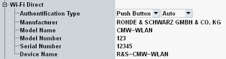

In the operation mode "Wi-Fi Direct", the following node is available in the connection settings.

Selects the WPS method to be used for authentication, see also "Wi-Fi Protected Setup (WPS)".
In "Manual" mode, you must initiate the authentication via a hotkey, see "WDirect / WPS Start Conn. (hotkey)".
Remote command:Specifies a PIN for the authentication types "Display" and "Keypad". The setting is only displayed if one of these authentication types is selected.
For "Display", the signaling application expects that the DUT sends the specified PIN. Specify any PIN and enter it at the DUT upon request.
For "Keypad", the signaling application sends the specified PIN to the DUT. Specify the PIN that is expected by the DUT.
Remote command:Defines the Wi-Fi Direct device properties of the simulated entity. They are used to populate the P2P information element.
Remote command: